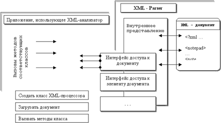

Internet Explorer, несмотря на мощную встроенную поддержку XML, сегодня далеко не единственное средство, которое можно использовать для работы с новым языком. Обработкой XML документа на стороне клиента или сервера может также заниматься любой другой анализатор XML-документов, который конвертирует их в обычную HTML страницу или извлекает из нее информацию для других приложений.
Что такое XML Parser?
Любой XML-процессор, являясь, по сути, транслятором языка разметки, может быть разбит на несколько модулей, отвечающих за лексический, синтаксический и семантический анализ содержимого документа. Понятно, что если бы мы были вынуждены каждый раз писать все эти блоки самостоятельно, необходимость в XML как в таковом бы отпала - основное его преимущество, как уже упоминалось ранее, заключается в стандартном способе извлечения информации из документа. Синтаксически правильно составленный XML-документ может быть разобран любым универсальным XML анализатором, и нашему XML-обработчику остается лишь использовать полученные на его выходе "чистые" данные (прошедшие синтаксический анализ) - интерпретировать содержимое документа, в соответствии с его DTD-описанием или схемами данных.

Конечно, синтаксический анализатор может быть довольно легко реализован и самостоятельно, например, в Perl, с его мощными возможностями обработки регулярных выражений. Но в общем случае такой "ручной" способ является довольно нетривиальной задачей, требующей некоторых усилий и является дополнительным источником ошибок. Поэтому применение универсальных XML-анализаторов может существенно облегчить жизнь разработчикам, тем более, что уже сегодня количество свободно доступных программ такого рода довольно велико.
В функции современного XML-процессора обычно входит получение общих сведений о документе, извлечение информации о его структуре и построения некоторой абстрактной объектной модели данных, представляющей эту структуру. По способу проверки разбираемых документов универсальные программы-анализаторы делятся на два типа: верифицирующие, способные обнаружить DTD-описания грамматики языка и использовать их для проверки документа на семантическую корректность; и неверифицирующие, не осуществляющие такой проверки.
Описывая разобранный XML-документ, универсальная программа-анализатор должна представить его структуру в виде упорядоченной модели данных, для доступа к которой используется какая-то станадртная, описанная в соответствующей спецификации библиотека классов - интерфейсов XML документа. На сегодняшний день существует два подхода к их построению: собыйтийный - Simple API for XML, SAX и объектно-ориентированный - DOM(Document Object Model). Рассмотрим их использование на конкретных примерах.
Что такое SAX
Сегодня стандартным интерфейсом для большинства универсальных XML-анализаторов является событийно-ориентированное API SAX - Simple API for XML.
Термин событийно-ориентированный является ключевым в этом определении и объясняет способ использования SAX. Каждый раз, когда при разборе XML документа анализатор оказывается в каком-то новом состоянии - обнаруживает какую-либо синтаксическую конструкцию XML-документа (элемент, символ, шаблон, и т.д.), фиксирует начало, конец объявлений элементов документа, просматривает DTD-правила или находит ошибку, он воспринимает его как произошедшее событие и вызывает внешнюю процедуру - обработчик этого события. Информация о содержимом текущей конструкции документа передается ему в качестве параметров функции. Обработчик события - это какой-то объект приложения, который выполняет необходимые для обработки полученной из XML информации действия и осуществляет таким образом непосредственный разбор содержимого. После завершения этой функции управление опять передается XML-анализатору и процесс разбора продолжается.
Реализацией этого механизма в Java SAX 1.0 является библиотека классов org.xml.sax (их можно получить, например, с узла: http://www.megginson.com/, но обычно эти классы включаются в состав XML -анализатора). Наследуя клссы SAX-совместимого анализатора, мы получаем универсальный доступ к XML документу при помощи классов, содержимое и механизм использование которых приведено в соответствующем описании.
Последовательный разбор XML-документа SAX-обработчиком обычно производится по следующей схеме (более подробное описание приведено ниже):
Ссылка на объект класса обработчика событий может передаваться объекту XML-анализатора при помощи следующих функций:
parser.setDocumentHandler(event_class); // - обработчик событий документа
parser.setEntityResolver(event_class); // - обработчик событий загрузки DTD-описаний
parser.setDTDHandler(event_class); // - обработчик событий при анализе DTD-описаний
parser.setErrorHandler(event_class); // - обработчик чрезвычайных ситуаций
Здесь event_class - объект созданного нами ранее класса.
Краткое описание некоторых из объектов-обработчиков событий приведено в следующей таблице:
Объект DocumentHandler
|
startDocument() |
Начало документа |
|
endDocument() |
Конец документа |
|
startElement (String name, AttributeList atts) |
Начало элемента. Функции передается название элемента(открывающий тэг) и список его атрибутов. |
|
endElement (String name) |
Конец элемента |
|
characters (char[] cbuf, int start, int len) |
Обработка массива текстовых символов |
|
ignorableWhitespace (char[] cbuf, int start, int len) |
Необрабатываемые символы |
|
processingInstruction (String target, String data) |
Обработка инструкций XML-анализатора) |
Объект ErrorHandler
|
warning (SAXParseException e) |
Получение сообщения о "несерьезной" ошибке. Пдробная информация содержится в передаваемом объекте класса SA XParseException |
|
error (SAXParseException e) |
Сообщение об ошибке |
|
fatalError (SAXParseException e) |
Сообщение о критической ошибке |
Для демонстрции использования этих методов рассмотрим небольшой пример обработчика регистрационного XML-документа (его структура описана в примере 2 первого раздела статьи). Java-приложение выводит содержимое документа и информацию о его структуре, путь к документу задается в командной строке. Для компилирования потребуется JDK 1.1.4 и классы SAX, находящиеся либо в текущем пакете, либо вместе с другими классами в classes.zip.
import java.io.OutputStreamWriter;
import java.io.PrintWriter;
import java.io.UnsupportedEncodingException;
import com.ibm.xml.parsers.DOMParser;
import org.xml.sax.Parser;
import org.xml.sax.SAXException;
import org.xml.sax.SAXParseException;
import org.xml.sax.AttributeList;
import org.xml.sax.HandlerBase;
import org.xml.sax.helpers.ParserFactory;
class saxParser extends HandlerBase{
private PrintWriter out;
private int elements;
private int attributes;
private int characters;
private int ignorableWhitespace;
private String url;
public saxParser(String url_str) {
url = url_str;
try {
out = new PrintWriter
(new OutputStreamWriter(System.out, "koi8-r"));
}
catch (UnsupportedEncodingException e) {
}
}
//===============================================
// Обработчики событий. Методы интерфейса
DocumentHandler
//========================
// Начало документа
public void startDocument() {
// Статистика
elements = 0;
attributes = 0;
characters = 0;
ignorableWhitespace = 0;
// Процессорные инструкции
out.println("<?xml version=\"1.0\"
encoding=\"UTF-8\"?>");
}
// Конец документа
public void endDocument() {
out.flush();
}
// Встретился открывающий тэг элемента //
public void startElement(String name,
AttributeList attrs) {
elements++;
if (attrs != null) {
attributes += attrs.getLength();
}
// Печать тэга элемента вместе со списком его
атрибутов, например, <elem id="48">
out.print('<');
out.print(name);
if (attrs != null) {
int len = attrs.getLength();
for (int i = 0; i < len; i++) {
out.print(' ');
out.print(attrs.getName(i));
out.print("=\"");
out.print(attrs.getValue(i));
out.print('"');
}
}
out.println('>');
}
// Встретился закрывающий тэг элемента
public void endElement(String name) {
out.println("</"+name+">");
}
// Текстовые символы
public void characters(char ch[], int start,
int length) {
characters += length;
out.println(new String(ch, start, length));
}
// Необрабатываемые символы(например, содержимое
секции CDATA)
public void ignorableWhitespace(char ch[],
int start, int length) {
characters(ch, start, length);
}
// Инструкции XML-процессору
public void processingInstruction (String target,
String data) {
out.print("<?");
out.print(target);
if (data != null && data.length() > 0) {
out.print(' ');
out.print(data);
}
out.print("?>");
}
//===================================================
// Методы интерфейса ErrorHandler
//===============================
// Последнее предупреждение
public void warning(SAXParseException ex) {
System.err.println("Warning at "+
ex.getLineNumber()+" . "+
ex.getColumnNumber()+" - "+
ex.getMessage());
}
// Произошла ошибка
public void error(SAXParseException ex) {
System.err.println("Error at {"+
ex.getLineNumber()+" . "+
ex.getColumnNumber()+" - "+
ex.getMessage());
}
// Такие ошибки исправить уже нельзя
public void fatalError(SAXParseException ex)
throws SAXException {
System.err.println("Fatal error at {"+
ex.getLineNumber()+" . "+
ex.getColumnNumber()+" - "+
ex.getMessage());
throw ex;
}
//============================================
// Вывести информацию о документе
//===============================
public void printInfo() {
System.out.println();
System.out.println("Документ "+url+"
был успешно обработан");
System.out.println("Элементов : "+elements);
System.out.println("Атрибутов : "+attributes);
System.out.println("Символов : "+characters);
}
}
//================================================
// Обработка XML документа
//========================
public class saxSample{
public static void main(String argv[]) {
try {
saxParser sample = new saxParser(argv[0]);
Parser parser = ParserFactory.makeParser
("com.ibm.xml.parsers.SAXParser");
parser.setDocumentHandler(sample);
parser.setErrorHandler(sample);
parser.parse(argv[0]);
sample.printInfo();
}
catch (Exception e) {
e.printStackTrace(System.err);
}
}
}
Комментарии
Первым шагом в процессе построения XML-обработчика является создание объекта из класса анализатора (в нашем случае это классы из паекета com.ibm.xml.parsers). Для этого можно использовать класс ParserFactory, входящий в org.xml.sax.helpers:
import org.xml.sax.*; ... Parser parser = ParseFactory.createParser(); ...
Затем следует определить обработчики возникающих в процессе разбора XML-документа событий. Приложению необязательно устанавливать все обработчики сразу - в классе HandlerBase все события могут обрабатываться "по умолчанию". Более подробную информацию по использованию SAX-анализаторов можно найти в примерах приложений в пакетах анализатора или на сервере www.megginson.com. Комментарии, файлы приложений и результатов их работы можно найти по адресу http://www.mrcpk.nstu.ru/
Назад | Содержание | Вперед